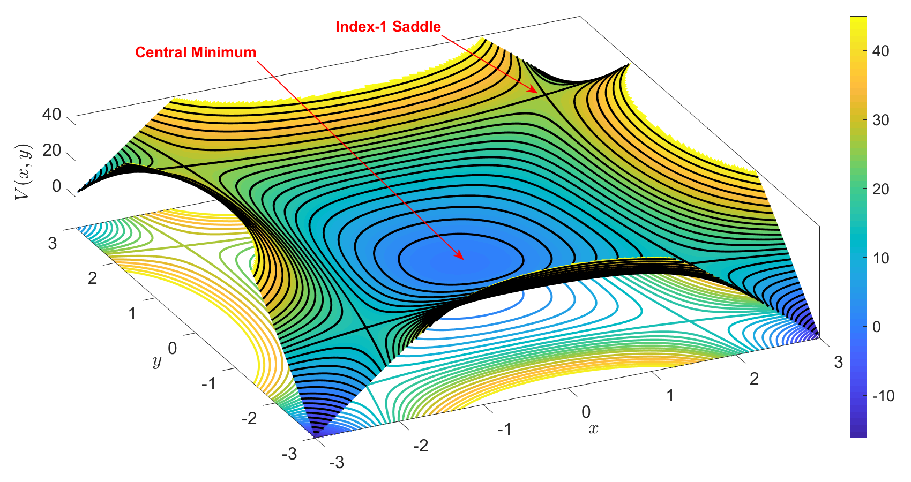

Dynamical matching is an interesting chemical dynamical phenomenon that occurs in a variety of organic chemical reactions. A caldera PES arises in many organic chemical reactions, such as the vinylcyclopropane-cyclopentene rearrangement \cite{baldwin2003,gold1988}, the stereomutation of cyclopropane \cite{doubleday1997}, the degenerate rearrangement of bicyclo[3.1.0]hex-2-ene \cite{doubleday1999,doubleday2006} or that of 5-methylenebicyclo[2.1.0]pentane \cite{reyes2002}. It is characterized by a flat region or shallow minimum at its center surrounded by potential walls and multiple symmetry related index one saddle points that allow entrance and exit from this intermediate region. This shape of the potential resembles the collapsed region within an errupted volcano (caldera), and this is the reason that Doering \cite{doering2002} and co-workers refer to this type of potential as a caldera.
The manifestation of the dynamical matching phenomenon is essentially a statement of momentum conservation and Newton's first law of motion. It is observed that a trajectory entering the Caldera from a channel corresponding to a high energy index-1 saddle (reactant) experiences little force in the caldera due to the ''flatness'' of the PES, and it exits through the diametrically opposing low energy index-1 saddle (product). Consequently, this mechanism determines to a considerable extent the outcome of the chemical reaction. However, not all trajectories entering the caldera experience dynamical matching. It is observed that some trajectories may interact with the shallow potential well and become temporarily trapped in the region. This can dramatically influence the manner in which they exit from the well.
A detailed study of the trajectory behavior in a two DoF caldera PES was given in \cite{collins2014}, where a more general discussion of caldera-like PESs in organic reactions is also presented. Further work elucidating the phenomena of dynamical matching and trapping in this caldera model was carried out in \cite{ katsanikas2018,katsanikas2019}. We will describe the results in these papers in more detail when we describe the Hamiltonian model in the next section.
In this chapter we describe the phase space mechanism that controls dynamical matching. We show that dynamical matching is controlled by a heteroclinic intersection between the unstable manifold of a periodic orbit controlling entrance to the caldera and the stable manifold of a periodic orbit in the region of the shallow minimum. When a heteroclinic connection exists, trajectories that enter the caldera are transported to the shallow minimum, and they experience temporary trapping in this region. When there is no heteroclinic connection, trajectories enter and exit the caldera without interacting with the region of the central minimum. Knowledge of this phase space mechanism is significant because it allows us to predict existence, and non-existence, of dynamical matching.
This chapter is outlined as follows. In Section \ref{sec:model} we describe the Caldera PES that we use in this work, its critical points and stability, and the resulting Hamiltonian model. Section \ref{DM_mech} is devoted to analyzing the phase space structures that govern dynamical matching.
We give a brief description of the caldera potential energy surface (Fig. \ref{equi1}) and Hamiltonian as described in \cite{collins2014}. The caldera potential has a stable equilibrium point at the center, referred to as the central minimum. This potential has an axis of symmetry, the y-axis. We have also the existence of potential walls around the central minimum. On these potential walls we encounter four 1-index saddles (two for lower values of energy, referred to as the lower saddles, and two for higher values of energy, referred to as the upper saddles). In this chapter we consider the stretched version of the caldera potential:
\begin{equation*} \label{eq1} V(x,y)=c_1(y^2+(\lambda x)^2) + c_2y - c_3((\lambda x)^4 + y^4 - 6 (\lambda x)^2 y^2) \end{equation*}The potential parameters are $c_1=5$, $c_2=3$,$c_3=-3/10$ and $0<\lambda \leq 1$. The classical symmetric caldera PES \cite{collins2014,katsanikas2018} corresponds to $\lambda = 1$ and is shown in the upper left hand panel of Fig. \ref{equi}.
The Hamiltonian for the system with two DoF is the sum of kinetic plus potential energy:
\begin{equation} H(x,y,p_x,p_y) = \frac{p_x^2}{2m_x} + \frac{p_y^2}{2m_y} + V(x,y) \label{eq2} \end{equation}where $V(x,y)$ is the Caldera PES in Eq. \eqref{eq1}, and $m_x$, $m_y$ are the masses of the $x$ and $y$ DoF respectively. In this work, for simplicity, we take $m_x = m_y = 1$. Hamilton's equations of motion are given by:
\begin{equation} \begin{cases} \dot x = \dfrac{\partial H} {\partial p_x} = \dfrac{p_x}{m_x} \\[.4cm] \dot y = \dfrac{\partial H} {\partial p_y} = \dfrac{p_y}{m_y} \\[.4cm] \dot p_x = -\dfrac{\partial H} {\partial x} = 2 \lambda \, (\lambda x) \left[2c_3 \left((\lambda x)^2 - 3 y^2 \right) - c_1 \right] \\[.4cm] \dot p_y = -\dfrac {\partial H} {\partial y} = 2 y \left[ 2 c_3 \left(y^2 - 3 (\lambda x)^2\right) - c_1 \right] - c_2 \end{cases} \label{eq3} \end{equation}In Fig. \ref{equi} we show the contours and the equilibrium points of the potential for different values of $\lambda$, for example $\lambda=0.8$, $\lambda=0.6$ and $\lambda=0.2$. Table \ref{tab:ta08} summarises the positions and energies of the upper index-1 saddles for different values of $\lambda$. We observe that the positions of the index-1 saddles move away from the center of the Caldera as we decrease the parameter $\lambda$. The position of the central minimum is $(x,y) = (0,-0.297)$ with energy $E = -0.448$ for all values of the stretching parameter $\lambda$.
 \caption{Caldera potential energy surface for $\lambda=1$.} \label{equi1}
\caption{The stable equilibrium point in the center (depicted by a black point), the upper saddles (depicted by red points), the lower saddles (depicted by blue points) and the contours of the potential for $\lambda = 1$ (upper left panel), $\lambda = 0.8$ (upper right panel), $\lambda = 0.6$ (lower left panel) and $\lambda = 0.2$ (lower right panel).} \label{equi}
\caption{The upper index-1 saddles of the PES in Eq. \ref{eq1} ("RH" and "LH" are the abbreviations for right hand and left hand respectively) for different values of $\lambda$. The energy for each of the cases is $E = 27.0123$.}\label{tab:ta08}
| Equilibrium point | x | y | $\lambda$ |
|---|---|---|---|
| Upper LH index-1 saddle | -2.149 | 2.0778 | 1 |
| Upper RH index-1 saddle | 2.149 | 2.0778 | 1 |
| Upper LH index-1 saddle | -2.6862 | 2.0778 | 0.8 |
| Upper RH index-1 saddle | 2.6862 | 2.0778 | 0.8 |
| Upper LH index-1 saddle | -3.5815 | 2.0778 | 0.6 |
| Upper RH index-1 saddle | 3.5815 | 2.0778 | 0.6 |
| Upper LH index-1 saddle | -10.7446 | 2.0778 | 0.2 |
| Upper RH index-1 saddle | 10.7446 | 2.0778 | 0.2 |
In order to reveal the phase space structures that are responsible for the mechanism that allows and prevents dynamical matching, we use in this work the method of Lagrangian descriptors (LDs), see e.g. \cite{mancho2013lagrangian,lopesino2017,naik2019a}. Lagrangian descriptors is a trajectory-based scalar diagnostic that has been developed in the nonlinear dynamics literature to explore the geometrical template of phase space structures that characterizes qualitatively distinct dynamical behavior. Details on how they are applied for revealing phase space structures in caldera-like PESs are described in \cite{KGW2019,KGW2019a}. In this chapter we focus on presenting the results relevant to dynamical matching.
\label{DM_mech}
As we have described in the introduction, the caldera gets its name from the shape of the PES. However, transport across the caldera is a dynamical phenomenon governed by the template of geometrical structures in phase space, and dynamical matching is just one particular type of dynamical phenomenon that we are considering in this chapter. First, we describe the phase space structures that mediate transport into the caldera.
For a two DoF system, the fixed energy surface is three dimensional. For energies above that of the upper saddles an unstable periodic orbit exists in the energy surface. This is a consequence of the Lyapunov subcenter manifold theorem \cite{moser1976, weinstein1973, rabinowitz1982}. In a fixed energy surface, these periodic orbits have two dimensional stable and unstable manifolds. Trajectories move away from the periodic orbits along the direction of the unstable manifold in forward time. In the upper left panel of Fig. \ref{fig_panel} we show a segment of the unstable manifold of the upper right-hand saddle directed towards the interior of the caldera.
The region of the central minimum of the caldera may also contain unstable periodic orbits. The stable manifolds of these periodic orbits direct trajectories towards the central minimum. In the upper left panel of Fig. \ref{fig_panel} we show a segment of the stable manifold of an unstable periodic orbit in the region of the central minimum directed away from the central minimum.
If the stable manifold of a periodic orbit in the central minimum intersects the unstable manifolds of one of the upper saddles we have a mechanism for trajectories to enter the caldera and be directed towards the region of the central minimum. In dynamical systems terminology this is referred to as a heteroclinic connection. This would inhibit dynamical matching, as trajectories entering the caldera would exhibit (temporary) trapping in the region of the central minimum. If the heteroclinic connection breaks, as might occur if a parameter is varied, the mechanism for directing trajectories towards the regions of the central minimum no longer exists, and dynamical matching is possible. Hence, a heteroclinic bifurcation is the critical phase space structure that inhibits or allows dynamical matching, which we now present.
In order to explore the formation of a heteroclinic intersection between any stable manifold coming from an UPO of the central region of the Caldera and the unstable manifold of the UPO of the upper-right index-1 saddle, as the stretching parameter of the Caldera PES is varied, we probe the phase space structures in the following Poincare surface of section:
\begin{equation} \mathcal{U}^{+}_{x,p_x} = \lbrace (x,y,p_x,p_y) \in \mathbb{R}^4 \;|\; y = 1.88409 \; ,\; p_y > 0 \;,\; E = 29 \rbrace \label{psos} \end{equation}In the middle-left panel of Fig. \ref{fig_panel}, we observe that there is a critical value of the stretching parameter ($\lambda=0.778$) for the formation of this heteroclinic connection. For values of the stretching parameter above the critical value there is no heteroclinic connection between any stable manifold coming from an UPO of the central region of the Caldera and the unstable manifold of the UPO of the upper index-1 saddle (see the upper left panel of Fig. \ref{fig_panel}). The non-existence of these heteroclinic connections results in the phenomenon of dynamical matching. In this case, if we integrate an initial condition inside the region of the unstable manifold of UPO of the upper-right index-1 saddle forward and backward in time, we see in the upper right panel of Fig. \ref{fig_panel} that the resulting trajectory comes from the region of the upper-right index-1 saddle and exits the caldera through the region of the opposite lower saddle without any interaction with the central area of the caldera.
Now, for values of the stretching parameter equal or above the critical value we have the formation of heteroclinic connections between the stable manifold coming from an UPO of the central region of the Caldera and the unstable manifold of the UPO of the upper-right index-1 saddle, (see middle and lower left panels of Fig. \ref{fig_panel}). This heteroclinic connection destroys the dynamical matching mechanism because many trajectories become trapped inside the lobes between the two invariant manifolds. We can see this better if we choose an initial condition inside a lobe, as we illustrate in the middle and lower left panels of Fig. \ref{fig_panel} and integrate it forward and backward. We observe that the resulting trajectory is temporarily trapped in the central area of the caldera before it exits from this area, see the middle and lower right panels of Fig. \ref{fig_panel}.
\caption{Phase space structures calculated on the Poincar\'e section described in Eq. \eqref{psos} located in the vicinity of the UPO of the upper-right index-1 saddle. We have similar structures in the vicinity of the UPO of the upper-left index-1 saddle because of the symmetry of the potential. We illustrate the formation of an heteroclinic connection, as the stretching parameter of the Caldera PES is varied, between a stable manifold (blue curve) of an UPO of the central region of the Caldera and the unstable manifold (red curve) of the UPO associated to the upper index-1 saddle. The first row corresponds to $\lambda = 0.8$, the second row is for the critical stretching value $\lambda = 0.778$, and for the third row we use $\lambda = 0.7$. In the second column, we capture the inhibition of dynamical matching by depicting the projection onto configuration space of the trajectory of two initial conditions marked as a yellow dot (outside the lobe - in all rows) and a yellow diamond (inside the lobe - in the second and third row). In the first row, forward and backward evolution of the trajectory are represented in black and green respectively. In the second and third row, the red line indicate the part of the trajectories at backward integration that correspond to both of them, circle and diamond. In addition, the black and blue line indicate the part of the trajectories at forward integration that correspond to the circle and diamond respectively. The magenta curve represents the energy boundary in all rows.} \label{fig_panel}